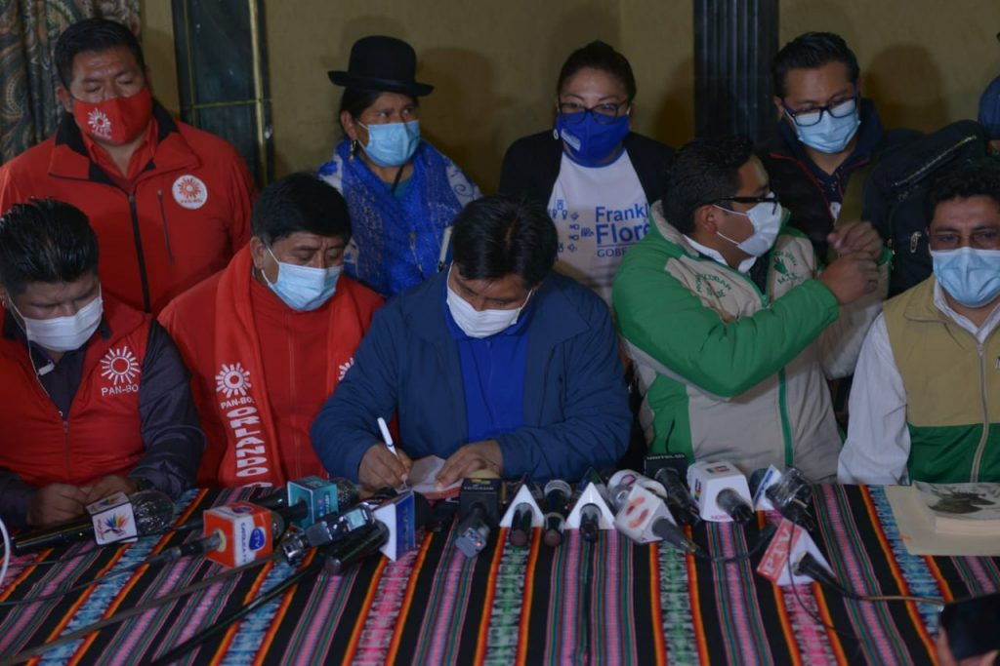

Segunda vuelta electoral y el voto anti MAS

Se ha discutido las más de las veces, sobre el comportamiento del electorado al momento de sufragar. Si bien estos razonamientos se acercan al resultado, vaticinarlo abiertamente tiene un riesgo, cuyo resultado es el descrédito público. Se entenderá entonces, el por qué las opiniones que emiten los analistas de Unitel sobre las encuestas, son tomadas como tendenciosas. Y es que deben existir premisas de las que parten los análisis para contrastarlas con la realidad, no de corazonadas ni de intenciones que buscan generar una intención de voto.
Si la premisa para que Iván Arias, fuera elegido como alcalde del municipio capital de este departamento fue el voto anti MAS, para la segunda vuelta no debiera cambiar la intención del voto de la ciudad. Parece razonable pensar que la ausencia del alcalde electo de los medios de comunicación y/o de la agenda política, corresponde a la estrategia de mantener viva la intención primigenia: sostener el voto anti MAS. Solo como ejemplo debe notarse que desaparecieron del ámbito público, las denuncias de acoso sexual contra Arias. “El Negro”, tampoco salió a opinar contra el MAS, en un cálculo para no recibir respuestas que ensucien su imagen (mucho más) antes del 11 de abril (11A).
A pocos días del día eleccionario, Rafael Quispe “el tata” ex candidato a la gobernación por la agrupación de Iván Arias, salió a decir que su voto será nulo. Quedará en el singular de su verdadera influencia votante (casi nula), porque en él no concurre ningún tipo de influencia en sus votantes respecto a lo que hará el 11A. Sin embargo, aquellas personas que votaron por él para gobernador, continuaran con el voto anti MAS por lo referido. Entonces deberá contabilizarse para la estadística, que al menos el 90% de la votación de Rafael Quispe irá para el opositor al MAS en la segunda vuelta.
El voto anti MAS, no debe consignársele exclusivamente al citadino, debido a que sus vertientes son varias y distintas del racismo de los grupos de poder tradicionales, que perdieron sus privilegios, a lo largo de los 14 años de gobierno del MAS. Las razones para que exista el voto anti MAS en las provincias paceñas, no podrían circunscribirse a una sola. Podría hacerse un recorrido por el computo del pasado 7 de marzo, en las provincias donde no ganó el MAS, y encontrar en ellas motivos que contradicen lo esperado, por ejemplo: que el hijo del Mallku no podría heredar la votación del padre, por los mismos principios que lo encumbraron a Felipe Quispe como el gran líder indígena de la revolución Aymara.
En El Alto, ha existido un voto cruzado entre los militantes de JALLALLA, pues para elegirla a Eva Copa como su alcaldesa, alcanzaron a 406.700 votos y sin embargo su candidato a la gobernación solo recibió 195.065 votos. Podría entenderse esto, si se infiere que a Eva la tenían en mente como su alcaldesa, independientemente del partido con el que se haya postulado desde que era senadora, a diferencia del candidato a gobernación que recibió menos de la mitad de los votos de Eva. Lo mismo sucedió con los votos del MAS, pues solo 113.310 votos fueron para el candidato municipal, a diferencia de los 238.485 que recibió Franklin Flores, candidato a Gobernador. De lo que se puede analizar que, los votantes de esta ciudad si podrían cambiar su voto, dependiendo de los hechos posteriores al 7 de marzo y previos al 11A.
Pareciera que la estrategia asumida por Franklin Flores para ganar en segunda vuelta, fue la consolidación del voto rural y la conquista de otros votos en las provincias que le permitan ganar, la duda surge cuando se hace un calculo matemático, y uno se pregunta si esa campaña buscó obtener ese pequeño porcentaje que le faltaba para llegar al 40%, y es que si el voto anti MAS aun se mantiene vivo, solo con los votos de Rafael y Santos Quispe en la provincia Murillo (320.777 y 259.973), le aventajan por más de 100.000 votos a Franklin (435.041).
Otra de las estrategias asumidas, fue la firma de alianzas con el Movimiento al Tercer Sistema y Frente Para la Victoria, que a nivel departamental han alcanzado 93.465 votos entre ambos. Sin embargo, a diferencia del MAS que puede trasladar votos, estas dos agrupaciones no les caracteriza la disciplina partidaria para lograr la suma esperada. ¿Fue la estrategia en la ciudad? ¿Y en El Alto?

El resto de los candidatos a gobernación que van por el MAS en otros departamentos, escogieron el otro camino, buscando alianzas en otros ámbitos, más corporativos y sindicales: han realizado pactos con gremios y asociaciones de productores, comerciantes y otros, con los que antes no se tuvo acercamiento y ahora la opción de una victoria ha podido estrechar vínculos con ellos. Esta receta la utilizó Santos Quispe en las ciudades de La Paz y El Alto. El 11A, sabremos cuál de estos dos caminos fue más productivo.
JALLALLA de Santos Quispe utilizó otra herramienta, la victimización. Cada interlocutor que sale en prensa, siempre refiere que el MAS les ha ofendido o denigrado, que el MAS juega sucio, que el MAS miente. La mayoría de los votantes masistas como mi persona, entendemos que esa estrategia no sirve con nosotros, pero ha servido para ese votante que el 7 de marzo ha votado por gobernador a Franklin y alcaldesa a EVA, ha servido para modular su voto al candidato que su alcaldesa le pide que vote.
Se sabe que la elección del candidato a la alcaldía de El Alto por el MAS, generó un rechazo entre las filas alteñas. Se le echó la culpa a Evo, por una supuesta designación directa del candidato sin consenso de las bases. Sin embargo, tengo entendido que particularmente en esta ciudad, la elección del candidato fue realizada por la antigua dirigencia masista, desconociendo sugerencias y supuestas imposiciones del trópico cochabambino. Por lo que esa intención de establecer una idea en el imaginario colectivo contra Evo, provocó que la sensibilidad del electorado respecto de las declaraciones que realice, sean tomadas en lo más alto de la susceptibilidad para favorecer el voto anti MAS. Y cuando llueve nos mojamos todos, pues el ataque hacia Eva ha generado el efecto contrario, la fortaleció a tal punto de permitirle acercarse a la derecha y esto no afecte a su votante alteño. Desde Evo hasta el último militante o simpatizante masista, podríamos ser pasibles de que se nos juzgue, por haber caído en la trampa de atacarla.
El 11A, nos dejará muchas enseñanzas a todos los que somos militantes masistas, pero algo que no podemos perder de vista es que el enemigo está en la derecha, en la Iglesia, en los comités cívicos, colegios médicos, y entre los desclazados de la clase media. Hay que recordar que éstos son los que siempre nos han dividido y han sometido nuestra lucha, por lo que se debe profundizar el logro de nuestra Constitución Política del Estado, la heterogeneidad entre hermanos.
Ariel Percy Molina Pimentel “El Molinario”
Abogado y Militante MAS – IPSP
Miembro Colectivo “La Vanguardia”